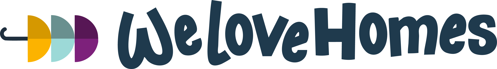
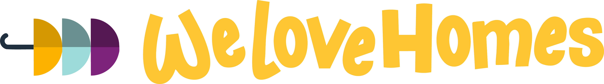
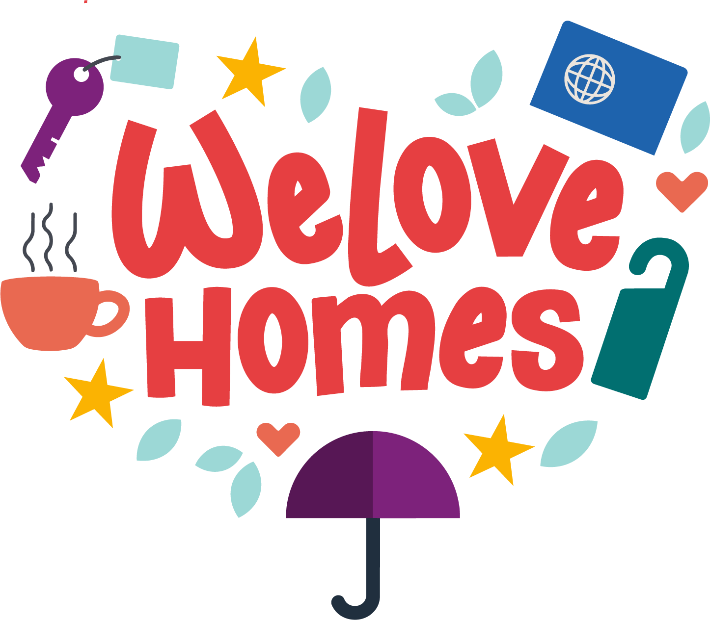

1.1 · Clear space x = altura da casinha · sempre ≥ 1x ao redor

1x 1x 1x 1xReserve ao redor do logo uma área livre igual à altura da casinha (1x). Nada — texto, imagem, borda — pode invadir essa zona.
1.2 · Tamanho mínimo preserva legibilidade do wordmark
Digital · 18px alt.

Selo · 32px alt.
Print · 8mm alt.
Abaixo desses tamanhos, prefira o mark sozinho (casinha) — ele ainda funciona até ~16px.
1.3 · Faça assim ✓ preferências corretas
✓ contraste alto
Petrol sobre cream — combinação primária.

✓ versão dark
Yellow sobre petrol — em fundos escuros.

✓ selo completo
Quando há espaço, o selo vertical é prioritário.
1.4 · Não faça ✗ misuses comuns
✗ não estique
Mantenha sempre a proporção original.
✗ não comprima
Distorção vertical é proibida.
✗ não gire
O logo é sempre horizontal ou em selo vertical.
✗ não recolora
Use só as 4 versões de cor oficiais.
✗ baixo contraste
Não use yellow sobre lemon/sand.
✗ fundo ruidoso
Sempre sobre superfície sólida e calma.